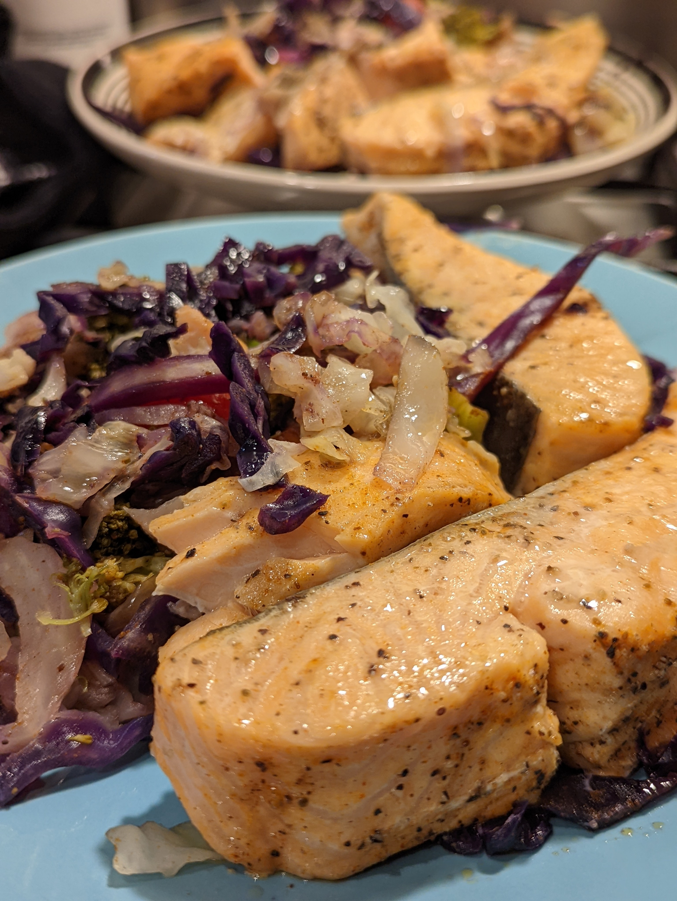

Easy steamed Salmon ( and veggies) recipe

Delicious steamed fish dish
This is a super easy and fast recipe for making steamed salmon using a
bamboo steamer-- the benefit of which is most are layered so this allows
you to also steam veggies at the same time. The prep time is minimal and
the cook time is less than 15 mins. This recipe is also very flexible; you
can use whatever fish and veggie compbination your heart desires-- however
the cook times described here pertain to salmon in particular. Here's what
you'll need:
Ingredients
- Bamboo Steamer (optional-- two layers recommended)
- Salmon (any size-- we're using a 2.5 lb slab)
- cabbage (precut or whole)
- Main veggies: brocoli, cauliflower, carrots, one or two potatoes.
- garlic cloves-- 4 or more
- butter
- chicken or beef stock (optional--water works fine)
- Seasonings: salt, pepper, garlic powder, Old Bay seasoning
Steps
-
Prep your cabbage-- cut and wash(
pre sliced cabbage will save you a ton of time.)--We'll be layering these thin slices along the bottom of the
steamers to prevent our food from sticking. Thin slices will also help
with steam times...also, steamed cabbage is delicious!
-
Prep the rest of your main veggies-- wash and cut to preference-- in
general small chunks/ thin slices steam faster (looking at you
potatoes!)
-
wash and then season your salmon to preference: a little salt, pepper,
and garlic goes a long way-- but the main spice here will be
Old Bay powder-- don't overdo it--unless you like the
extra kick it provides.
-
Cut your salmon into manageable slices-- this helps with spacing in the
bamboo steamer and also with the steaming times.
-
crush and slice up your garlic cloves-- we'll add half of these to
season the veggies and salmon-- the other half will be used to season
your steam...
-
yes... steam! Whether you're using water or stock or a combination of
both-- add some salt, garlic powder, some chopped garlic to the fluid
you'll be using to steam your food. set that to boil.
-
now it's time to prep your steamers while we wait for the pot to boil;
Lay out your cabbage slices as the foundation-- season them to
preference (Don't forget the Oldbay), next lay out the
veggies and season them. I like to use the bottom steamer for the
veggies and top for a veggie Salmon combination. but you can honestly
lay this out however makes you happy.
- Cut up some butter slices and place on top of Salmon
-
once the pot is boiling-- place your bamboo steamer on top and let it
steam for roughly 13-15 minutes
- Finally--plate that shit up and enjoy!